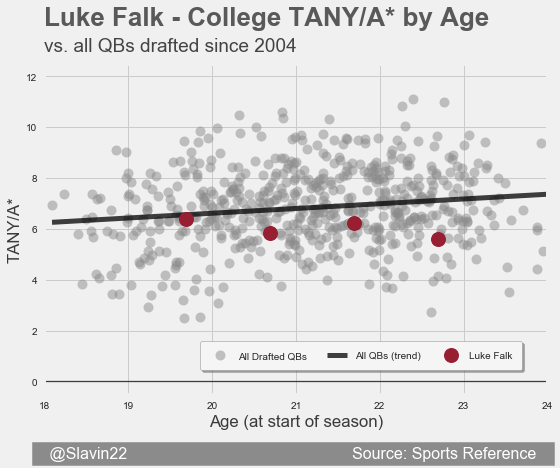
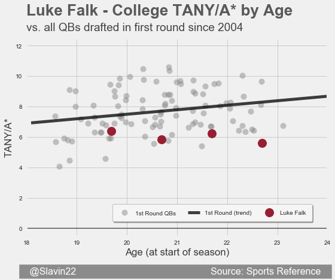

Luke Falk

| School | Rookie Age | Height | TANY/A* | Breakout Age | Mobility |
|---|---|---|---|---|---|
| Washington State | 23.7 | 6'4" | 5.97 (Poor) | No Breakout | -2.2% (Poor) |
TANY/A* by Age compared to: All QBs drafted | First Round QBs | Day 2 QBs | Day 3 QBs




My Take
Luke Falk's freshman year was decent for his age, but he never progressed statistically. Draft analysts are much higher on Falk than I am. I still think he's worth a shot in the sixth round, but all signs point to him being taken a couple rounds earlier. In 2QB dynasty leagues, he may get scooped up in the fourth rounds of rookie drafts. Instead, I'll be picking up Logan Woodside or Riley Ferguson for free.